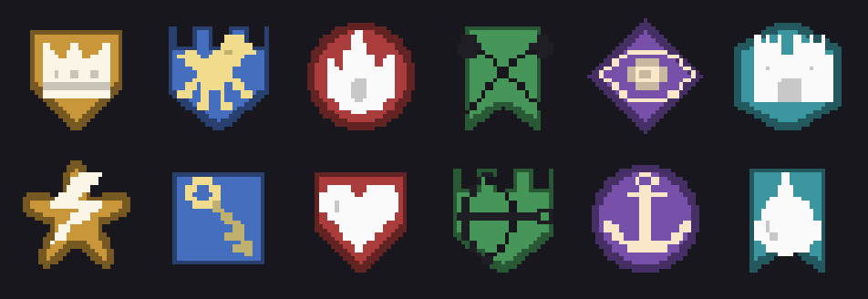

Guilds
Guilds are lasting groups of players with roles and permissions, a level, a shared bank, a history, an emblem, alliances with other guilds, tax collectors and a hall of their own. This page covers what players see and do, every setting with its default, what the server checks, and how to set up founding, emblems, alliances and halls.
What a guild is
A guild has a unique name, a notice every member reads, members with roles, a level and experience, a bank with gold and item storage, and points the guild spends on its tax collectors. Its name shows under each member's name over their head, with its emblem to the left and the alliance tag in brackets when it has one.
Guilds live in Central and the database (tables guilds, guild_members, guild_events and alliances), so they work across every map server. They need an online server: in single player, founding, inviting and the guild bank answer "Only on an online server."
A character belongs to one guild at a time.
For the player
The guild window
Press G or click the guild button in the icon bar at the top right of the screen.
- Without a guild, the window offers to found one. A line under the button says what founding asks for (level, gold, an item) or that guilds are founded at the guild registrar.
- In a guild, the top shows the emblem, the name, the level, the experience to the next level, the gold in the guild bank and the unspent points. Buttons for Emblem, History and Alliance sit at the top right. Below are three tabs.
Members tab
- The notice, with a field to change it for roles allowed to.
- An invite field.
- One row per member: name, level and class, role, and where they are (online on a map, or offline).
- A Role dropdown on each row. It lists only the roles the viewer may hand out: those below their own role, never the leader's.
- Lead (leader only) hands the leadership to that member.
- Kick removes a member in a lower role, for roles with the Remove members permission.
Roles tab
On the left, the list of roles from highest to lowest, each with how many members have it. On the right, the picked role: its name and its permissions in four groups, each permission with a check box, a name and a line explaining it. Buttons Add role, Delete role, Revert and Save. Nothing changes until you press Save.
The panel says why a role can't be changed: "The leader may do everything.", "Your role can't change roles." or "Only roles below your own can be changed."
Collectors tab
The current numbers of the guild's tax collectors, every upgrade with its rank, its effect and the guild level the next rank needs (with a Raise button for roles allowed to spend points), and each collector out in the world with where it stands and what it gathered at its last save. See Tax collectors.
Chat and invites
| Action | How |
|---|---|
| Guild chat | /gu text or /guild text, or pick the Guild channel |
| Alliance chat | /al text or /alliance text, shown in light blue |
| Invite a player | /ginvite name, the invite field in the guild window, or right click the player > Invite to guild |
| Answer an invite | The popup that appears, Accept or Decline |
Central carries guild and alliance chat to members on every map. Party members show in light blue in the member list.
Guild bank and storage
The guild bank has its own NPC, separate from the account banker (in the sample, Bram the guild treasurer, next to Odette). An NPC with a Guild bank option (GuildBankOption) opens it for members whose role has the Open the guild bank permission. It uses the same window as the account bank.
- Gold and items you put in leave your character first. If Central refuses the deposit, it gives them back.
- When you take something out, the map checks first that your bag has room. If it still doesn't fit, it goes to your account bank. Nothing is lost.
- Bound items and quest items can't go into the guild bank.
- Storage holds
GuildStorageSlots(50) stacks.
Guild level and points
Every member gives the guild a share of the experience they earn (Guild Experience Share, 10% by default). It doesn't take anything from the member: it is extra experience for the guild. Each member's share is sent every 15 seconds. What tax collectors gather also adds to it.
The experience a guild needs past level n is GuildExperienceBase × n² (2,000 × n² by default). Each level past the first gives GuildPointsPerLevel points (1), spent on tax collector upgrades. The guild can hold MaxGuildSize members (50) plus GuildSizePerLevel (2) for each level past the first, up to level MaxGuildLevel (20).
History
History in the guild window shows the last 100 events, newest first: founding, members joining, leaving or kicked, role changes, the leadership, role edits, the notice, the emblem, levels, collector upgrades, gold and items in and out of the bank, collectors placed, collected or lost, the hall bought and alliance events. Central keeps GuildHistoryDays (90) days of history.
Roles and permissions
Roles go from the lowest to the leader. The leader is always the last role and may do everything. A guild has 2 to 8 roles. New members get the lowest role.
Default roles
| Role | Permissions |
|---|---|
| Recruit | None |
| Member | Open the guild bank, put things in |
| Veteran | Invite, open the guild bank, put things in, take items out, place collectors |
| Officer | Invite, remove members, edit the notice, assign roles, open the guild bank, put things in, take items out, spend guild points, place collectors, collect, guild hall |
| Leader | Everything |
Guilds founded before roles existed keep their three ranks (Member, Officer, Leader) until someone edits them.
Every permission
| Group | Permission | What it allows |
|---|---|---|
| Members | Invite | Invite players to the guild |
| Members | Remove members | Kick members in lower roles |
| Members | Assign roles | Move members between the roles below their own |
| Members | Edit roles | Rename lower roles and change what they may do |
| Members | Edit the notice | The message every member sees |
| Bank | Open the guild bank | At the guild banker |
| Bank | Put things in | Items and gold |
| Bank | Take items out | From the guild storage |
| Bank | Take gold out | From the guild bank |
| Tax collectors | Place collectors | Paying for each one |
| Tax collectors | Collect | Take what a collector gathered, which sends it home |
| Tax collectors | Spend guild points | On the collectors' upgrades |
| Guild | Change the emblem | Shape, symbol and colors (only when the game allows changing it) |
| Guild | Guild hall | Buy it with the bank's gold |
| Guild | Speak in alliances | Found, join, invite or leave for the guild |
Rules the server enforces
- Nobody acts on a member of their own role or a higher one, and nobody puts another member in a role equal to or higher than their own.
- Whoever has Edit roles changes the names and permissions of roles below their own. Only the leader adds or removes roles.
- When roles are edited, each member keeps the place of their role and the leader stays last.
- The leader can't leave while other members are in the guild. Hand the lead first with Lead.
- To disband, empty the guild bank and storage first. The guild's tax collectors go with it.
- Central applies guild changes one at a time, so two members can never take out the same item.
Founding a guild
The rules for founding live in the Game Database, Settings category, section Founding guilds and alliances.
| Field | What it does | Default |
|---|---|---|
Guild Found Level (guildFoundLevel) |
Lowest character level that can found a guild | 1 |
Guild Found Gold (guildFoundGold) |
Gold founding costs. 0 is free | 0 |
Guild Found Item (guildFoundItem) |
Item founding uses up, like a charter. Empty: none | Empty |
Guild Found At (guildFoundAt) |
Where guilds are founded: Window Or Npc, Npc (only at an NPC with a Guild Founding option) or Window | Window Or Npc |
Guild Emblems (guildEmblems) |
Shapes, symbols and colors for emblems. Empty: guilds have no emblem | Empty |
Guild Emblem Changeable (guildEmblemChangeable) |
Roles with the Emblem permission may change it later. Off: picked once, when founding | Off |
Alliance Found Gold (allianceFoundGold) |
Gold founding an alliance costs, paid by the member who founds it | 0 |
Guild Experience Share (guildExperienceShare) |
Share of the experience members earn that also goes to their guild, 0 to 1 | 0.1 |
Left alone, founding is free, from the guild window, with no emblem.
The sample asks for level 5 and a Guild Charter, which Edda, the town's guild registrar, sells for 1,000 gold. Founding happens only at Edda.
Step by step: found at a registrar NPC
- Create the charter item in the Game Database (Items). Don't make it a quest item: the project check flags a founding item that is one.
- In the Game Database Settings, set Guild Found Level, Guild Found Gold if you want a gold cost too, Guild Found Item to the charter and Guild Found At to Npc.
- Make a Guild Emblems asset and set it in Guild Emblems, or leave it empty for no emblems.
- In the scene, add an NPC and give it a Found a guild option (
GuildFoundOption). To sell the charter there too, add a shop option with a shop that sells it. - Press Play, buy the charter, talk to the NPC and pick Found a guild. The emblem picker opens with a name field, the shapes, symbols and colors, and what founding asks for.
The Found a guild option is hidden from players already in a guild and when Guild Found At is Window.
What the server checks
The map server checks the founder before anything leaves their bag:
- Not in a guild already ("Leave your guild first.").
- Level, gold and the item.
- At an NPC within reach when founding is NPC only ("Guilds are founded at the guild registrar.").
- The name passes the chat filter ("That name has words this game doesn't allow.").
- A valid shape and symbol when the game has emblems ("Pick a shape and a symbol for the emblem.").
Then the map takes the gold and one charter and asks Central, which checks that the name is free, 3 to 24 letters, digits or spaces, and that the emblem is valid. If Central refuses, it gives back the gold and the charter and the player reads why. If it accepts, the gold and the item are gone for good.
Emblems

An emblem is a shape with a symbol on top, each tinted with a color the guild picks. Emblems show on nameplates, in the guild window and in the alliance window.
Create the asset with Create > KitARPG > Guilds > Guild Emblems.
| Field | What it does | Default |
|---|---|---|
Backgrounds (backgrounds) |
Shapes behind the symbol, drawn in white | Empty |
Symbols (symbols) |
Symbols drawn over the shape, in white | Empty |
Palette (palette) |
Swatches offered when picking. Any color is allowed | 12 colors |
The sample's asset has 8 shapes and 24 symbols, drawn by Art/Tools/make_guild_emblems.py into Art/Sprites/Emblems.
Guilds store the index of their shape and symbol. Only add sprites at the end of each list. Reordering or removing one changes the emblem of every guild that uses it.
With Guild Emblem Changeable on, the Emblem button in the guild window opens the picker for roles with the Emblem permission. Off, the button is hidden and the server refuses the change.
Alliances
An alliance joins up to MaxAllianceGuilds (10) guilds. It has a name (3 to 24 letters, digits or spaces), a tag (2 to 4 letters or digits) shown in brackets next to the guild name, a notice and its own chat channel (/al). Name and tag are unique.
Open it with Alliance in the guild window. The alliance window founds one with a name and a tag, lists the guilds with their emblem, and has invite, hand the lead, remove, leave and disband, plus the incoming invite.
| Action | Who |
|---|---|
| Found | A member with the Alliance permission, whose guild is in no alliance. Costs Alliance Found Gold, refunded if Central refuses |
| Invite a guild | Members with the permission in the leading guild. The invited guild must have a member online with the permission; the invite lasts 120 seconds |
| Accept or decline | A member of the invited guild with the permission |
| Leave | A member with the permission. If the leading guild leaves, the guild that joined first leads; if none is left, the alliance ends |
| Remove a guild, hand the lead, notice | Members with the permission in the leading guild |
| Disband | Only the leader of the leading guild |
Disbanding a guild, or its last member leaving, takes it out of its alliance too.
The guild hall
A guild hall is an instanced map: each guild that buys it gets its own copy, named guild-<id>.
| Field | What it does | Default |
|---|---|---|
Guild Hall (guildHall) |
The map each guild gets a copy of. Must be instanced. Empty: no halls | Empty |
Guild Hall Price (guildHallPrice) |
Gold the guild pays from its bank | 50,000 |
On Central, AlliesEnterHalls (off) lets members of allied guilds into a guild's hall too.
In the sample, Edda sells the hall for 20,000 gold from the guild bank and takes members there. The GuildHall scene is a hall with a table, benches, banners, a fireplace, Bram the treasurer and a door back to town.
Step by step: add a guild hall
- Make the hall's scene with a
SpawnPoint, a baked NavMesh and a portal back to your town. - In the Game Database, add a map for it and turn on Instanced. Empty Minutes says how long a hall stays loaded after its last member leaves (the sample uses 15).
- In Settings > Guild hall, set Guild Hall to that map and Guild Hall Price.
- On an NPC (the door), add two Guild hall options (
GuildHallOption): one with Act Enter and one with Act Buy. Enter shows only to guilds that own a hall; Buy shows only to roles with the Guild hall permission in a guild without one, with the price in its label. - The sample's hall map,
guild_hall, comes registered with Central on port 7780 (launcher, Central'sMapssetting and Docker Compose). A hall map of your own gets a port from Play & Servers on your computer; on a server, add it to Central'sMapsand to Docker Compose like any map. See Maps.
Buying takes the price from the guild bank, writes it to the history and tells the members. Central only lets a character into guild-<id> if they belong to that guild (or an ally, with AlliesEnterHalls) and the guild owns a hall; otherwise the trip fails with hall_closed.
A player who logs out inside the hall comes back on the start map, not in the hall. Halls are entered through their door.
Single player and MMO
| Single player | MMO | |
|---|---|---|
| Founding, members, roles, chat | Not available ("Only on an online server.") | Yes |
| Guild bank and storage | No | Yes |
| Alliances, halls, tax collectors | No | Yes |
Turn the whole system off with the Guilds module in Modules. Tax collectors need it.
Central settings
These go in Central's appsettings.json under Central, or as environment variables (Central__MaxGuildSize). See Configuration.
| Setting | What it does | Default |
|---|---|---|
MaxGuildSize |
Members at level 1 | 50 |
GuildSizePerLevel |
More members per level past the first | 2 |
MaxGuildLevel |
Highest guild level | 20 |
GuildExperienceBase |
Experience past level n is this × n² | 2,000 |
GuildPointsPerLevel |
Collector upgrade points per level past the first | 1 |
GuildStorageSlots |
Stacks the guild storage holds | 50 |
GuildHistoryDays |
Days of history kept | 90 |
MaxAllianceGuilds |
Guilds in one alliance | 10 |
AlliesEnterHalls |
Allied guilds may enter each other's halls | false |
Existing projects
The kit updates Guild emblems (GuildEmblemsUpdate, adds the emblem asset) and Guild roles, emblem, history and alliance windows in the HUD (HudGuildUpdate) add what newer versions brought to a game made earlier, without rebuilding the HUD. Overview lists them with Apply. See Updating the kit.
Common mistakes
- Founding does nothing at the window. Guild Found At is Npc. Talk to the registrar.
- The emblem of every guild changed. A sprite was inserted or removed in the middle of the Guild Emblems lists. Put them back and only add at the end.
- Members can't open the guild bank. Their role lacks Open the guild bank, or the bank NPC has no Guild bank option.
- The leader can't leave. Hand the lead to someone first, or kick everyone and disband.
- Can't disband. The guild bank or storage still holds gold or items.
- Entering the hall fails. The hall map isn't instanced, isn't in the Game Database maps, or isn't registered with Central. Project Check flags the first two.
Related pages
- Tax collectors
- Chat and Friends and parties
- Inventory and bank
- Dungeons for how instanced maps work
- NPCs for NPC options
- Guilds in code